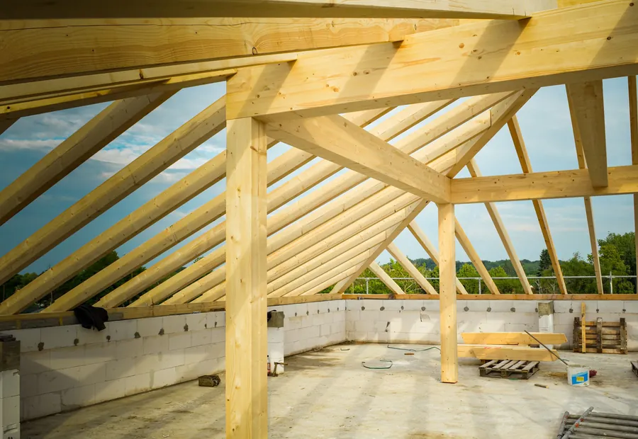
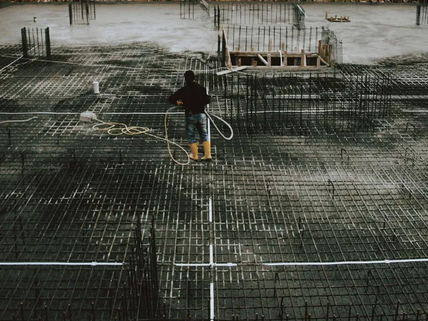
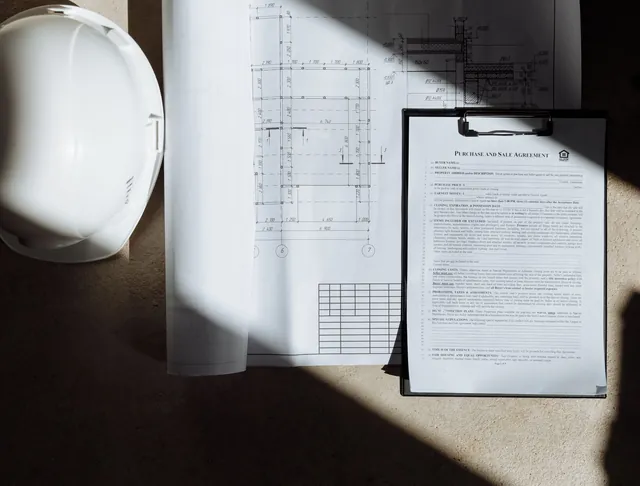
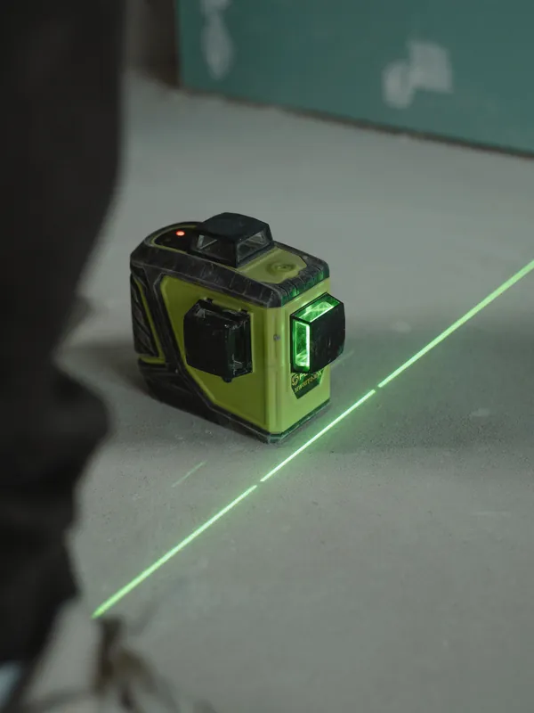
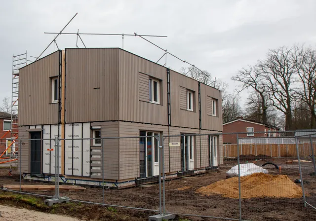
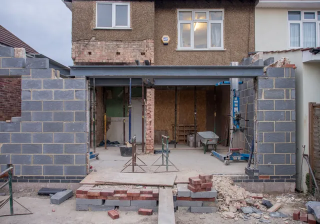
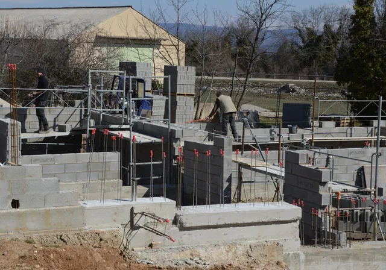

Būvdarbu vadītājs
vada darbus būvlaukumā
Plāno darbu secību, seko, lai būvētu pēc projekta un droši, kārto būvdarbu žurnālu. Ja būvējat saimnieciskā kārtā vai ar atsevišķiem meistariem, būvdarbu vadītājs saskaņo viņu darbu un atbild par to.
Būvuzraudzība · Būvdarbu vadīšana · Latvija
Pārbaudām darbus katrā posmā, pieņemam segtos darbus, kārtojam dokumentus BIS un palīdzam nodot būvi ekspluatācijā.

Uzņēmuma dati
01 · Ieguvumi
Būvuzraugs strādā pasūtītāja pusē. Viņš pārbauda, vai būvnieks dara to, kas ir projektā, un vai darbi atbilst normatīvu prasībām. Jūs zināt, kas notiek objektā, arī tad, ja paši tur neesat katru dienu.

Pamati, sienas, pārsegumi, jumts: pārbaudām darbus, pirms sākas nākamais posms, nevis tad, kad viss jau nosegts.
Armatūru, hidroizolāciju un citus darbus, kurus vēlāk nosegs, pārbaudām un pieņemam ar aktu. Akts paliek jūsu būves dokumentos.
Piedalāmies būvvaldes pārbaudēs un sagatavojam informāciju, ko būvvalde prasa būvdarbu laikā.
Būvdarbu žurnāls Būvniecības informācijas sistēmā, būvuzraudzības plāns, akti un pārbaužu ieraksti: dokumenti kārtībā jau būvniecības laikā.
Sagatavojam būves dokumentāciju un piedalāmies būves pieņemšanā ekspluatācijā.
02 · Lomas

vada darbus būvlaukumā
Plāno darbu secību, seko, lai būvētu pēc projekta un droši, kārto būvdarbu žurnālu. Ja būvējat saimnieciskā kārtā vai ar atsevišķiem meistariem, būvdarbu vadītājs saskaņo viņu darbu un atbild par to.
kontrolē jūsu vārdā
Pārbauda, vai būvnieks strādā pēc projekta un normatīviem, pieņem segtos darbus un ziņo par atkāpēm. Noder, ja būvē būvuzņēmums un jūs vēlaties neatkarīgu kontroli.
Vai jūsu būvei būvuzraudzība ir obligāta, nosaka būves grupa un būvvaldes prasības. Pastāstiet par objektu, un pateiksim, kas jums vajadzīgs.

03 · Process
Solis 01
Pastāstiet, kas tiek būvēts, kur un kad plānojat sākt. Ja ir būvprojekts vai būvatļauja, pievienojiet tos e-pastam.
Solis 02
Iepazīstamies ar projektu, vienojamies par pārbaužu grafiku un darba apjomu. Būvuzraudzībai sagatavojam būvuzraudzības plānu.
Solis 03
Pārbaudām darbus norunātajos posmos, pieņemam segtos darbus, veicam ierakstus BIS un uzreiz ziņojam par atkāpēm no projekta.
Solis 04
Sagatavojam dokumentus un piedalāmies būves pieņemšanā ekspluatācijā.
04 · Objekti

Jaunas dzīvojamās mājas: no pamatiem līdz nodošanai ekspluatācijā.

Esošu ēku pārbūve, piebūves, jumta un fasādes atjaunošana.

Biroji, veikali, darbnīcas un noliktavas.
Strādājam ar objektiem Latvijā. Nosauciet objekta adresi, un pateiksim, kā varam palīdzēt.
05 · Uzņēmums
Visus datus var pārbaudīt Būvniecības informācijas sistēmā bis.gov.lv un Uzņēmumu reģistrā.
06 · Jautājumi
Vislabāk pirms darbu sākuma. Tad pārbaudes var ieplānot jau no pamatiem, un segtos darbus nenosedz bez pārbaudes.
Tas atkarīgs no būves un būvvaldes prasībām. Pastāstiet par objektu, un pateiksim, kas attiecas uz jūsu būvi.
Objekta adresi, būvprojektu vai tā daļu, būvatļauju vai paskaidrojuma rakstu, plānoto darbu sākumu un, ja jau zināms, būvnieku.
Ja būvējat saimnieciskā kārtā, varat piesaistīt mūs kā būvdarbu vadītāju. Pārrunāsim, cik bieži jābūt objektā un kas jāpārbauda.
07 · Kontakti
Piezvaniet vai uzrakstiet: kas tiek būvēts, kur un kad plānojat sākt. Atbildēsim un pateiksim, kā varam palīdzēt.
Tālrunis+371 22 347 075
E-pastsekspertsd@inbox.lv
SIA „Eksperts D”
Reģ. Nr. 40203396894
PVN Nr. LV40203396894
Centra iela 3B-18, Sondori-Škeņeva,
Vērēmu pag., Rēzeknes nov., LV-4647